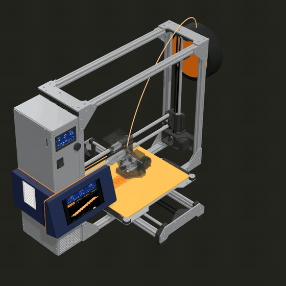

Software
The film tools
The scripts that make the film of the Printdeck with the simulator.

desktop/film/ makes a short film of the Printdeck with the 3D window of the simulator. Two scripts run it.
film.sh
Makes the parts of the film of the Printdeck: the G-code of the plaque that the simulator prints during the film, the music, the soundtrack with the announcer, and the title cards. take.sh records the film with the 3D window of the desktop app.
desktop/film/film.sh OUT (OUT is a folder; the voice model goes to OUT/voices)It needs uv (build123d, numpy, kokoro-onnx), Go, CuraEngine in /opt/ultimaker-cura, and ffmpeg.
take.sh
Records a take of the film of the Printdeck, with the parts that film.sh made in OUT. It builds the deck and the desktop app, starts the simulator on its own, and starts the print of the plaque at the layer of the letters (resume.py). Then it opens the 3D window in film mode, records the take, adds the steppers to the soundtrack (steppers.py), and encodes OUT/printdeck-film.mp4.
desktop/film/film.sh OUT (once: the plaque, the music, the voice, and the cards)
desktop/film/take.sh OUT [FROM TO FPS]FROM TO FPS are the seconds of the film and the frames a second (0 80 30). "0 80 1" makes a fast preview. It needs Go, CMake, Ninja, Qt 6, uv, and ffmpeg.
The files
| File | What it does |
|---|---|
music.py | The music of the film (film.sh): 80 s of synth, made here from sine, saw and square waves and noise. The tempo puts the start of bar 9 at 17.4 s, when the display of the Printdeck turns on (screenOn in Sim3D.qml): the pad and a soft arpeggio until then, the bass and the kick from bar 5 (the assembly), and the full beat from bar 9. A last chord starts at 72.5 s (the end card). |
plaque.py | The part that the simulated printer prints in the video (film.sh): a plaque with the word PRINTDECK in raised letters, in the font of the deck. |
resume.py | Starts a print of the simulator at a layer of its file, so that a take of the film (film.sh) does not wait for the layers before it. The deck shows the moves before that layer as printed. |
slice.py | Slices the plaque of the video (plaque.py) for the simulated TAZ Workhorse, with the PLA settings of the mount (lulzbot/cura/make_profiles.py), and writes the G-code with the PRINT_START and PRINT_END macros of the Printdeck printer. |
steppers.py | The sound of the printer in the film (film.sh): the song of the stepper motors, from the moves that the take recorded (take.mp4.motion.csv), under the music and the voice. |
voice.py | The announcer of the film (film.sh): Kokoro (kokoro-onnx) speaks each line at its time, and the music goes softer under the voice. The lines are a joke about a touch screen that a printer does not need, timed to the shots of Sim3D.qml. |
cards.json | The title cards of the film, with their times. |
cura-header.png | A picture for the shot of the Cura plugin. |
The window plays the film with PRINTDECK_FILM: see the window.